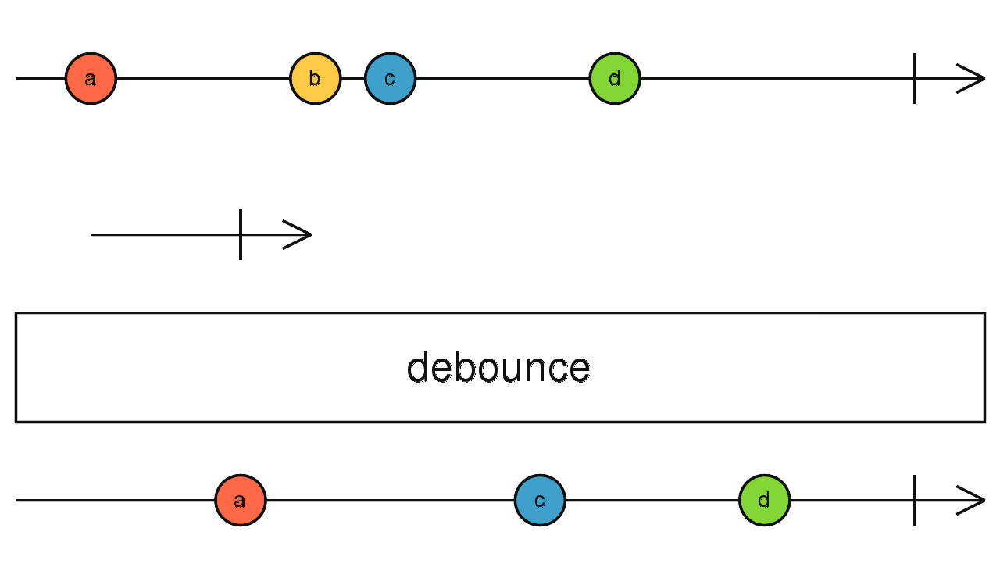

debounce
参数列表：
-
durationSelector
function(value: T): SubscribableOrPromise
1个函数，接收source发出的value作为参数，为每一个value计算超时时间，返回observable或者promise都可以
返回值: Observable <T[]>
珠宝图:

功能说明:
- debounce把从Source拿到的value进行delay,但是如果有新的value到达，他会drop之前的value,并重新调用durationSelector得到新的duration Observable
- 只有当 duration Observable 发出value或者complete的时候，debounce才会返回value
备注事项:
- debounce主要用于保存最近一段时间的最后一个值。可以用来限制value出现的频率
- debounce的控制更加灵活，但普通情况下使用debounceTime就足够了
点击不同按钮查看不同demo 代码效果